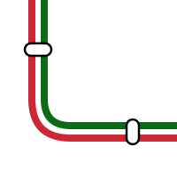
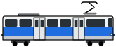
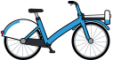
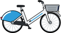
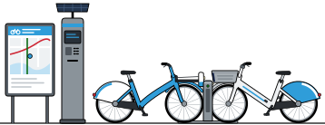
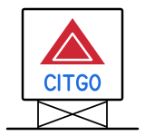
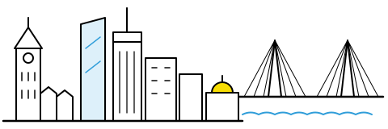

01
Color
Ink and white do most of the work. Line colors mark transit and categories, and each sidequest card takes the color of the main T line it rides. Yellow is an accent, so use it sparingly. The number on each chip is the contrast ratio of the text shown on it.
Core · from bostonhacks.org
--color-red#CE2634Primary accent: main buttons, RL cards, logo.--color-green#0C6B14GL cards, "Start route", cost icon, success.--color-blue#206DDFBL cards, links, focus, active nav.--color-sky#2F9DD9Map water, bike legs, illustration accents. Ink text only.--color-yellow#F7DD04Ratings, checkpoints, one highlight per screen.--color-ink#000000Text, card and control borders, map markers.--color-gray-light#D9D9D9Hairlines, panel and chip borders.--color-gray-mid#868686Disabled text and placeholders only.--color-paper#FFFFFFPage and card background.Extended transit & neutrals · our additions
--color-orange#ED8B00OL cards and pills. Ink text only (white is 2.5).--color-silver#7C878ESL cards. White text at large or bold sizes only.--color-purple#80276COptional, for trips outside the subway.--color-gray-50#F4F5F6Muted surfaces: card bottoms, hovers.--color-gray-dark#4A4A4AMuted text, passes AA on white.Tints & strong shades · backgrounds and hover states
--color-red-tint#FBE2E4--color-green-tint#DCEEDD--color-blue-tint#DDE8FB--color-sky-tint#DDF0FA--color-yellow-tint#FDF5B0--color-red-strong#AE1F2B--color-green-strong#08520F--color-blue-strong#1A5BBD--color-sky-strong#17699A02
Type
There are three faces, all from Google Fonts under the Open Font License. Archivo Expanded sets short all-caps titles in the spirit of transit signage. Akshar, the organizers' face, handles headings and UI. Noto Sans handles anything longer than a sentence.
Grab a matcha in Harvard Square, then ride the Red Line one stop to Central for pastries. We end on a Kendall rooftop with a view of the Charles. Bring a CharlieCard and about ten dollars.
Scale · rem-based, shown in Akshar 600
--text-5xl64 Boston--text-4xl48 Boston Bound--text-3xl36 Boston Bound--text-2xl30 Boston Bound--text-xl24 Boston Bound--text-lg20 Boston Bound--text-md18 Boston Bound--text-base16 Boston Bound--text-sm14 Boston Bound--text-xs12 Boston Bound--text-2xs11 Boston Bound03
Tokens
Spacing, radii, borders and shadows. Every value lives in styles/tokens.css and is mirrored in styles/tailwind.config.snippet.js.
Spacing · 4 px base
--space-14--space-28--space-312--space-416--space-520--space-624--space-832--space-1040--space-1248--space-1664--space-2080--space-2496Border widths
--border-hairline--border-thin--border-base--border-lineHairline gray is for panels, chips and dividers. Thin ink is for cards, buttons and inputs. Base is for selected states. Line is for subway-line strokes in the UI.
Radii
4px6px8px12px16px999pxShadows · soft and short everywhere; hard ink offsets on buttons only
Utilities
04
Assets
These are original SVGs in assets/svg/, with clean geometry and no filters. Use them as <img> with empty alt when they're decorative.
Line pills
pill-rl.svgpill-gl.svgpill-bl.svgpill-ol.svgpill-sl.svgSubway lines, stations & markers
divider-red.svg · also divider-orange.svgdivider-green.svgdivider-blue.svgdivider-bundle.svg
line-corner.svgstation-dot.svg · station-dot-ink.svg · station-transfer.svgmarker-stop.svg · marker-checkpoint.svgVehicles · the current car on each line, drawn to one shared scale

vehicle-rl.svgvehicle-ol.svg
vehicle-bl.svg
vehicle-gl.svg
vehicle-sl.svg
vehicle-bike.svgBluebikes · both bikes in today's fleet, a station, and map markers
vehicle-bike.svg · Classic pedal bike: sky frame, white rear panel, front carrier with a white plate that locks into the dock
vehicle-ebike.svg · E-bike (pedal assist, since Dec 2023): white frame, battery in the down tube, gray tub basket with a navy plate, sky rear panel, handlebar display
bike-station.svg · two-sided map board, solar kiosk, and a double-sided dock with a classic docked from one side and an e-bike from the othermarker-bike.svg · marker-ebike.svg (the yellow bolt means e-bikes are available) · pill-bike.svgdivider-bike.svg · dashed bike route with square dock stopsDrawn from 2024–26 photos of Boston stations. The panels are left blank, with no Bluebikes or sponsor logos.
Boston illustrations · empty states and onboarding only

citgo.svg · Kenmore Sq signlobster.svg
skyline.svg · Custom House, Hancock, Pru, State House, ZakimBrand
logo-mark.svg · app icon / faviconlogo-wordmark.svg05
Components
Every class here lives in styles/components.css. Icons are from Lucide (ISC license).
Sidequest card · track-card layout; the top color is the main T line
Sunday Café Hop
Outbound · 3 stops
Matcha in Harvard Sq, pastries in Central, then a Kendall rooftop. Red Line the whole way.
- $$$
- 35 min
- 4.6
Midnight Dumpling Run
Boarding · 2 stops
Chinatown dumplings and late bubble tea, back before the last Orange Line train.
- $$$
- 20 min
- 4.8
Thrift + Vinyl Crawl
Inbound · 4 stops
Three thrift stores and a record shop between Kenmore and Coolidge Corner.
- $$$
- 25 min
- 4.2
Revere Beach Sunrise
Layover · saved
Blue Line out to the beach for sunrise, then coffee on the boardwalk.
- $$$
- 40 min
- 4.9
- OUTBOUNDopen to join
- BOARDINGyou signed up
- INBOUNDcompleted
- LAYOVERsaved for later
Buttons
Use one primary (red) button per screen. Hover lifts the button and darkens its fill, and pressing pushes it into its shadow. Focus shows a blue outline. Use .btn--straight to drop the tilt in dense forms and toolbars.
Line & mode pills
Rating chips · read-only summary
- $$$
- 25 min
- 4.6
Chips are neutral, and the icon carries the color: green for cost, blue for time, a yellow star for fun. Unused $ signs are grayed out.
Rate a sidequest · input
App nav · the active tab turns blue
Below 640 px it becomes an icon tab bar. Dock it to the bottom of the screen in the app.
Map & route legend
Itinerary route strip · the detail view as a subway line
- 1Harvard Square caféMatcha + a window seat · ~$7
- Walk 4 min to Harvard
- RLHarvard → Central · 1 stop · 3 min
- 2Central Square bakeryPastry run · ~$5 Checkpoint: Graffiti Alley
- RLCentral → Kendall/MIT · 1 stop · 2 min
- Walk 6 min
- 3Kendall rooftop gardenFree · views of the Charles
Empty state · where illustrations belong
No saved sidequests yet
Save one from your feed and it shows up here, ready for the weekend.
Browse sidequestsBluebikes station · sheet counts and map pins
Central Square at Mass Ave / Essex St
Bluebikes · 3 min walk · 19 docks
- 7Classic
- 2E-bikes
- 10Open docks
.bike-avail shows counts from the Bluebikes GBFS feed. Add .is-zero to gray out a count of 0. Show open docks too, because riders need one at the end of the trip.
.bike-pin is an HTML map marker for zoomed-in views: bikes available, plus e-bikes after the bolt. Zoomed out, use marker-bike.svg or marker-ebike.svg.
06
Do & don't
Quick checks before you ship a screen.
Make buttons bold: 4 px ink outline, hard offset shadow, uneven corners and a slight tilt.
Don't use flat, outline-free buttons. They blend into the line-colored cards.
- $$
- 25 min
- 4.6
Keep everything else clean: cards, chips, panels and nav use thin rules and soft shadows.
Don't put the hard shadow or tilt on anything but buttons. When everything shouts, the buttons stop standing out.
Use white text on Red, Green, Blue and Silver. Use ink on Orange, Yellow and Sky.
Never put white text on yellow, orange or sky blue.
Give each card top one flat line color: the main T line of that sidequest.
Don't use gradients or rainbow fills. Show extra lines as pills instead.
- Keep backgrounds plain white. No grids, textures or colored page fills.
- Boston illustrations go in empty states, onboarding and the 404 page, one per screen. Don't scatter them around content as decoration.
- Use Archivo Expanded only for short all-caps titles of five words or fewer. Never use it for paragraphs or buttons.
- Yellow is the rarest color on a screen: ratings, checkpoints and at most one highlight.
- Inline links use
--color-link(Blue Line, 4.9:1). Sky blue never carries text. - Draw our own trains, lines and landmarks. Don't use the MBTA "T" logo, official map art or the organizers' artwork.